SSBMRank 2022
Table of Contents
Notes on SSBMRank 2022
Somehow, I have ended up with the role as data lead for SSBMRank 2022. This meant I was responsible for stuff like assembling the final list, dealing with outlier votes, normalizing the ballots, and the like. Since I have access to the ballots, I'm going to be posting some more nuanced information about the list beyond simply the point value used to determine the placements. I talk about some things people keep wanting to hear about, with respect to this years ranks.
Standard Deviations, and What They Mean
Probably the single ask with the most important implications are for there to be standard deviations published alongside the scores. Below I've provided this information alongside the list, without commentary.
| Rank | Tag | Score1 | Stdv |
|---|---|---|---|
| 1 | Zain | 10.00 | 0.000 |
| 2 | aMSa | 9.90 | 0.001 |
| 3 | Mang0 | 9.89 | 0.002 |
| 4 | iBDW | 9.77 | 0.005 |
| 5 | Hungrybox | 9.68 | 0.008 |
| 6 | Jmook | 9.60 | 0.009 |
| 7 | Leffen | 9.51 | 0.011 |
| 8 | Plup | 9.42 | 0.013 |
| 9 | SluG | 9.27 | 0.019 |
| 10 | Axe | 9.24 | 0.018 |
| 11 | lloD | 9.18 | 0.021 |
| 12 | KoDoRiN | 9.09 | 0.017 |
| 13 | moky | 8.97 | 0.019 |
| 14 | Fiction | 8.96 | 0.027 |
| 15 | S2J | 8.84 | 0.021 |
| 16 | Aklo | 8.66 | 0.036 |
| 17 | Wizzrobe | 8.61 | 0.020 |
| 18 | n0ne | 8.60 | 0.034 |
| 19 | Joshman | 8.59 | 0.022 |
| 20 | Pipsqueak | 8.53 | 0.026 |
| 21 | Ginger | 8.43 | 0.037 |
| 22 | Soonsay | 8.41 | 0.068 |
| 23 | Polish | 8.19 | 0.032 |
| 24 | Krudo | 8.17 | 0.041 |
| 25 | Magi | 8.15 | 0.025 |
| 26 | SFOP | 8.01 | 0.035 |
| 27 | SFAT | 7.97 | 0.027 |
| 28 | Lucky | 7.80 | 0.035 |
| 29 | Spark | 7.78 | 0.065 |
| 30 | null | 7.69 | 0.094 |
| 31 | Salt | 7.62 | 0.067 |
| 32 | Zamu | 7.28 | 0.160 |
| 33 | TheSWOOPER | 7.27 | 0.186 |
| 34 | bobby big ballz | 7.24 | 0.066 |
| 35 | Zuppy | 7.18 | 0.094 |
| 36 | Mekk | 7.13 | 0.134 |
| 37 | Jflex | 7.11 | 0.117 |
| 38 | Trif | 7.06 | 0.222 |
| 39 | Skerzo | 7.01 | 0.082 |
| 40 | Swift | 7.00 | 0.181 |
| 41 | 2saint | 7.00 | 0.166 |
| 42 | Medz | 6.98 | 0.107 |
| 43 | Rishi | 6.87 | 0.102 |
| 44 | Smashdaddy | 6.70 | 0.235 |
| 45 | Franz | 6.54 | 0.265 |
| 46 | Aura | 6.50 | 0.174 |
| 47 | Frenzy | 6.38 | 0.232 |
| 48 | Lunar Dusk | 6.31 | 0.165 |
| 49 | Professor Pro | 6.10 | 0.136 |
| 50 | Azel | 5.98 | 0.157 |
| 51 | FatGoku | 5.96 | 0.284 |
| 52 | Eddy Mexico | 5.90 | 0.544 |
| 53 | Kalamazhu | 5.77 | 0.311 |
| 54 | Panda | 5.76 | 0.118 |
| 55 | Ralph | 5.70 | 0.398 |
| 56 | Colbol | 5.66 | 0.183 |
| 57 | Kürv | 5.65 | 0.227 |
| 58 | Bbatts | 5.63 | 0.318 |
| 59 | Ben | 5.55 | 0.146 |
| 60 | Wally | 5.48 | 0.162 |
| 61 | Spud | 5.45 | 0.297 |
| 62 | SDJ | 5.42 | 0.240 |
| 63 | ChuDat | 5.40 | 0.690 |
| 64 | Logan | 5.37 | 0.182 |
| 65 | KJH | 5.29 | 0.377 |
| 66 | Chem | 5.21 | 0.184 |
| 67 | Grab | 5.21 | 0.175 |
| 68 | Mot$ | 5.12 | 0.269 |
| 69 | Suf | 5.08 | 0.468 |
| 70 | DrLobster | 4.92 | 0.352 |
| 71 | Dawson | 4.86 | 0.206 |
| 72 | Khryke | 4.83 | 0.138 |
| 73 | Faceroll | 4.82 | 0.165 |
| 74 | Gahtzu | 4.77 | 0.250 |
| 75 | Panko | 4.54 | 0.263 |
| 76 | Drephen | 4.50 | 0.209 |
| 77 | Palpa | 4.44 | 0.204 |
| 78 | Chape | 4.29 | 0.250 |
| 79 | Sirmeris | 4.19 | 0.286 |
| 80 | Kalvar | 4.13 | 0.246 |
| 81 | JJM | 3.88 | 0.354 |
| 82 | essy | 3.86 | 0.204 |
| 83 | Mad Tyro | 3.81 | 0.234 |
| 84 | Nickemwit | 3.70 | 0.206 |
| 85 | Wevans | 3.64 | 0.158 |
| 86 | Khalid | 3.59 | 0.238 |
| 87 | TheRealThing | 3.48 | 0.244 |
| 88 | Umarth | 3.36 | 0.302 |
| 89 | 404cray | 3.34 | 0.282 |
| 90 | Slowking | 3.28 | 0.196 |
| 91 | Eggy | 3.19 | 0.302 |
| 92 | Kevin Maples | 3.15 | 0.213 |
| 93 | Voo | 3.14 | 0.236 |
| 94 | Free Palestine | 2.96 | 0.224 |
| 95 | Logos | 2.96 | 0.254 |
| 96 | JustJoe | 2.94 | 0.259 |
| 97 | Abbe | 2.94 | 0.328 |
| 98 | Rocket | 2.92 | 0.277 |
| 99 | nut | 2.81 | 0.145 |
| 100 | Matteo | 2.79 | 0.183 |
| 101 | shabo | 2.72 | 0.525 |
How can we interpret this? Well, standard deviation is a measure of how "wide" the spread of data is. In our case, we can think of this as a measure for how much the panelists tended to "agree" on a specific player. High standard deviation means there was a lot of disagreement, and that the player was controversial. Low standard deviation means there was mostly agreement, and that most panelists probably put them around the same spot.
Roughly speaking, there are two effects you can notice. The first, is that the problem is heteroscedastic: that is, the further down the list you go, the higher the variance usually is. The second, is that players who attend less usually tend to have a much higher variance. This is easiest to see with ChuDat, who had extremely sparse attendance and who panelists put all over the place.
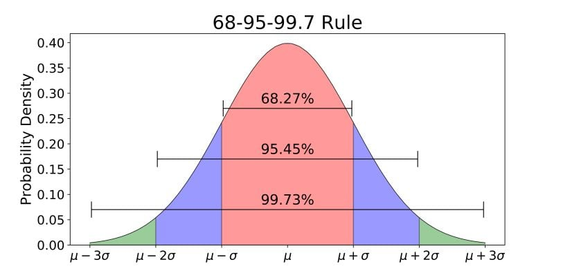
In cases where the distribution of votes looks like a nice normal distribution (which is the case for most, but not all, of the players), you can further extrapolate that roughly 68% of the data is within one standard deviation, 95% of the data is within two standard deviations, and 99% of the data is within three standard deviations. If we zero in on, for example, Chape: a player with a score of 4.29 and a standard deviation of 0.250, we can say that 68% of panelists have him and 4.04 and 4.54.
It's important to appreciate what this tells us about roughly where these players get voted: 4.04 would move Chape down to 80 (+2), 4.54 would move them up to 75 (-3). The number matters a lot to individual competitors and to their fans, but in appreciating the data it's helpful to remember that the final number is a roughly "center" value to an established range that player seems to fall into.
Point Estimates for Irregular Distributions
That "center" value is actually a somewhat trickier thing to determine than it might appear at first. In fact, sometimes it's simply impossible.
There's certainly a temptation to just take the list of votes, to take the mean of the votes, and to use this as "the panel's score". What we are essentially aiming for is a single point estimate of the voting distribution, with the eventual aim of sorting the point estimates to generate a final list. If you have normally distributed data, the mean is a great point estimate. In fact, the vast majority of players have distributions which are either normal, or close enough to normal where the mean works just fine.
However, this problem becomes annoying when you have a player for whom you get non-normal distributions for. There's a specific nuance here: if you have a player who is hard to rate, and the panelists disagree on where they should go, they still usually get a normal distribution, just a very wide one. You get non-normal distributions when there are groups of panelists who agree, and the groups disagree with each other. For example: a player who does very well at locals but very poorly at majors, where "major fan" panelists will rank them low and "local enjoyer" panelists will rank them high.
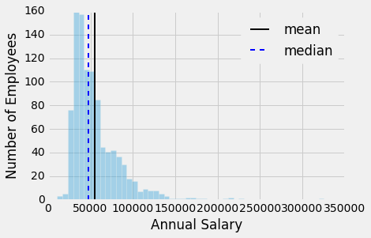
Our job is to take a distribution which looks like this and to find some sort of point estimate which accurately represents the votes cast by the panel. In the figure2 above, you'll have an example of how the different measures of center simply answer different questions: the mean answers a question like "how much are people paid here" whereas the median answers "what is the typical person paid here". One is a statement about the total amount of money in the dataset, the other is a statement about the typical worker. You can't really generate a point estimate which properly conveys everything you need, a point estimate here necessarily answers a specific question instead.
What we want, vaguely, is "who is better", which is vague and poorly defined! We have to confront all sorts of confusing thought experiments to answer this question. If we have a truly bimodal distribution, and we take the mean to yield a value nobody is happy with, is that "the will of the panel"? If two players have equal medians, representing their performances at majors, but one player has a pool of votes reflecting their superior performances at smaller tournaments, shouldn't we reward that player instead of ignoring those votes altogether? There are arguments for and against each measure of center, and "just picking one" will screw over some subset of players.
We ended up running with a unweighted average of their mean score and their median score. Doing this allowed us to exclude the fewest ballots as "outliers" while not overly punishing any particular player purely based on what measure of center we used. Overall this entire problem does very little to the list: we made this decision largely without looking at the list output to avoid bias, but we found that it only really affected a handful of players. In fact, most players had means and medians within 1 or at most 2 spots apart from each other. But for a couple players this avoided them getting punished just based on what we chose.
Maybe a detail which could have just been ignored. But that's not really how I do things! A project for the summer rank is to run experiments with a weighted average to get something which better approximates how people think a panel should behave in these situations.
Violin Plots
Something I did about 5 years ago was generate violin plots for KayB's West Coast Bias in SSBMRank and Why it Doesn't Exist. These were pretty popular for the time, and I think people appreciated the insight they provided to understanding how the panel voted for specific players. Since I have access to the ballots again, I'll do the same as I did then (with outlier votes removed so nobody gets too upset).
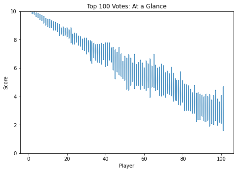
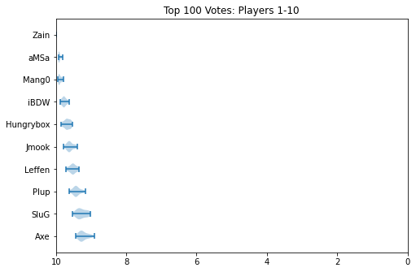 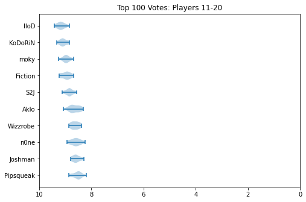 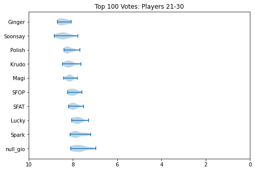 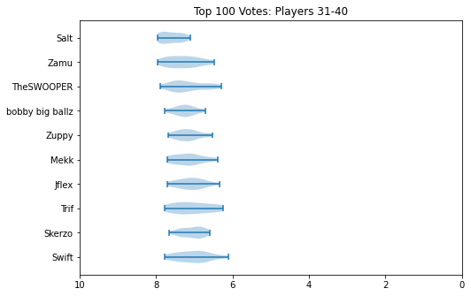 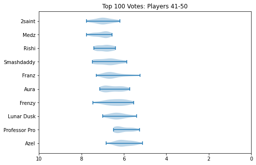 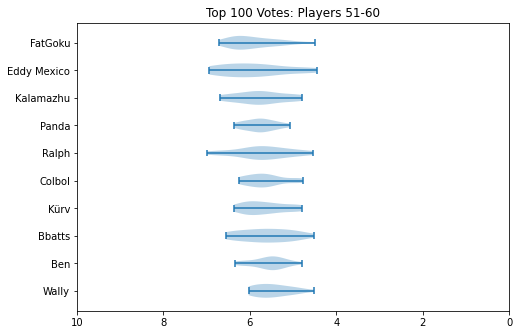 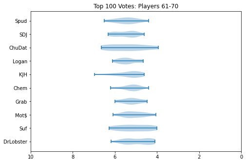 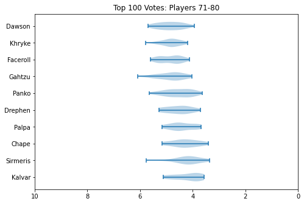 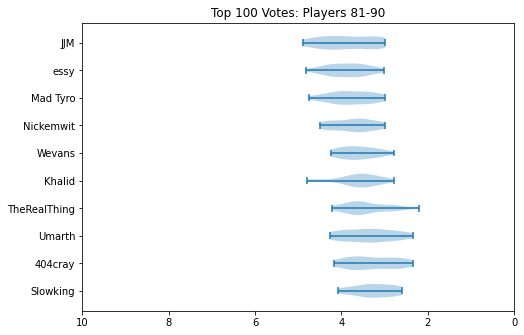 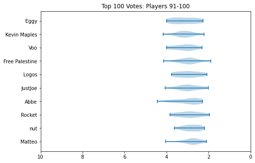
Notable about these is that Zain's "violin" seems to be invisible. This is because he was number 1 on every ballot, and had a standard deviation of 0 since the normalization moved every rank 1 to be the same value. Not much of a violin to be drawn there.
How Close is Close
I recognize most of you are probably here about Mango vs aMSa, and I have tricked you into scrolling past a bunch of charts and numbers before getting here. Please understand this is for my own sanity, as I would prefer discussion around this topic to be had among people who are willing to look at lots of charts and numbers before engaging.
First, without any commentary, let's look at a zoomed in violin plot of Mango and aMSa.
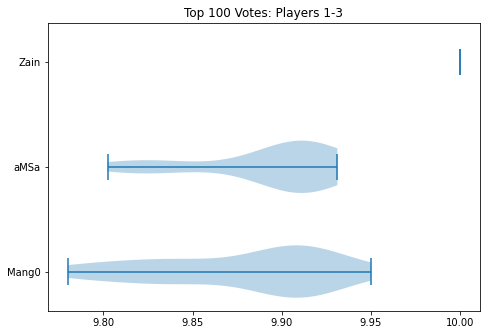
I hope people can appreciate, looking at this, that it truly could have simply gone either way. Fortunately for me, the measure of center thing I talked about earlier didn't actually adjust the order here at all (aMSa leads all measures), but I hope people can simply look at this image and understand that there's a clear argument for either player to be rank 2.
You might look at the number attached to the playercard, with aMSa 0.01 above Mango, and conclude that all 29 panelists agreed that aMSa was 0.01 over Mango. This is not only not the case (I personally voted Mango 2nd, for whatever that's worth), but it's extremely far from the case. In fact, I'll go so far as to reveal how many panelists voted each way:
- Mango Higher: 12
- aMSa Higher: 15
- Ties: 2
I'm not privy to the voting distributions of any of the previous top 100 lists, so what I am about to say is complete conjecture: I truly do not know if there has ever been a top 10 spot which has ever been so contested as 2022's 2nd spot. There's so much discourse about X tournament counting, or Y tournament not counting, or what would have happened if Z went differently. I truly believe this to be emblematic of how electrifying 2022 was, despite a huge chunk of it being ripped away due to Omicron. The top of the rankings is the most interesting it has ever been - maybe the most it will ever be. If everybody agreed on everything, it would be boring.
Closing Thoughts
There's lots I didn't go into in this writeup (normalization, outlier supression, etc), but these were just some thoughts I thought were interesting enough to share with others. With more time, I'm confident this process will grow more sophisticated. However, I'm really just glad we got the list out, and that people generally seemed to like the result. It meant a lot to me to be trusted to fill this important sort of role, and I'm thrilled that the death of Panda was not, in turn, the death of a community-agreed ranking of the top players. We got it all done under severe time crunch (and I had covid during my time working on all of this), so if it went as well as it did I'm sure it will only get better from here.
Footnotes:
Score is displayed to the second decimal point for readability.